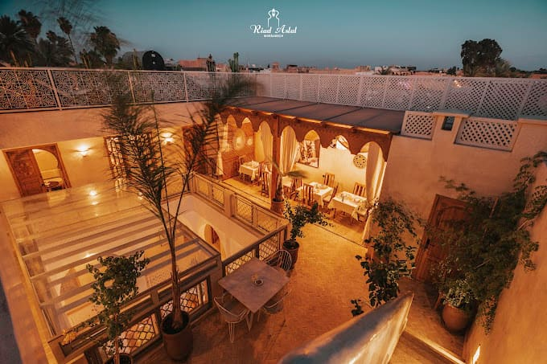

The short answer: Yes. Morocco is one of the most visited countries in Africa, and most trips pass without any problem at all. The US State Department rates it Level 2, "exercise increased caution", the same level it gives France, Spain and the UK. Canada and Australia both advise a "high degree of caution", mainly because of a general terrorism risk. For visitors, the everyday issues are petty theft, persistent touts and the occasional scam in busy medinas. All of these are easy to manage, and far easier with a private driver and a local guide.
"Is it safe?" is the question we hear most often from travelers in the United States, Canada and Australia, usually from people who are already excited about Morocco and want reassurance before they commit. It's a fair question. Morocco is a long way from home, the medinas look chaotic in photos, and official travel advice can sound alarming when you read it without context.
This guide gives you that context. It explains what the official advisories actually mean, separates real risks from reputation, and describes what changes when you travel with your own driver-guide instead of on your own or on a large group tour.
What the US, Canadian and Australian Advisories Say
Every government rates every country, and the wording is deliberately cautious. Here is where Morocco sits for the three countries most of our English-speaking guests come from:
| Country | Overall advice for Morocco | Main reason given |
|---|---|---|
| United States | Level 2 of 4: Exercise increased caution | Terrorism |
| Canada | Exercise a high degree of caution | Terrorism, plus petty crime and fraud |
| Australia | Exercise a high degree of caution | Terrorism |
Advice changes. Check the current version on travel.state.gov, travel.gc.ca or Smartraveller before you travel.
Two points help put this in perspective. First, Level 2 is also the US rating for much of Western Europe, so it signals a general background risk, not a warning against travel. Second, the stricter regional warnings mainly cover the border with Algeria and the disputed territory of Western Sahara in the far south. These areas are nowhere near the classic itinerary of Marrakech, the High Atlas, the Sahara at Merzouga, Fes and Chefchaouen.
The Real Risks for Visitors, and How to Handle Them
The things that actually spoil Moroccan holidays are much smaller than the headlines suggest. In our experience they fall into four groups.
Pickpocketing in crowded places
As in Rome or Barcelona, crowded squares and souks attract pickpockets. Jemaa el-Fnaa in Marrakech after dark is the classic spot. Carry a cross-body bag with a zip, keep your phone in a front pocket, and leave your passport in the hotel safe. Our guide to Jemaa el-Fnaa covers how to enjoy the square without the hassle.
Touts and "faux guides"
The most common annoyance is a friendly stranger who offers directions, tells you the street ahead is closed, or walks you to a "family workshop" where the goal is a commission. Saying a polite but firm "La, shukran" ("No, thank you") and walking on usually ends it. Booking an official guide for the medina removes the problem almost entirely, because touts rarely approach visitors who already have one.
Overcharging and small scams
Taxis without a running meter, henna applied before a price is agreed, and photos of snake charmers that suddenly cost money are all common. The fix is simple: agree on the price before anything happens. In shops, bargaining is normal and expected, and walking away politely is always acceptable.
Card fraud
Canada's advice specifically mentions card fraud. Use ATMs inside banks, shield your PIN, and tell your bank before you travel. Cash (Moroccan dirhams) is still needed for small purchases and tips.

Is Morocco Safe for Women?
Yes, and many of our guests are women traveling as couples, with friends, with family or on their own. The honest caveat is that women traveling without a man can attract more unwanted attention in busy medinas, usually comments or persistent sales pitches rather than anything threatening. A few habits make a real difference:
- Dress modestly in cities and villages. Covering shoulders and knees is respectful and noticeably reduces attention. Loose linen is ideal in warm months.
- Ignore comments rather than engaging. A confident walk and sunglasses go a long way.
- Use a guide in Fes and Marrakech, where the lanes are densest.
- Stay in a riad or hotel in a central, well-lit location, and use a pre-booked driver at night instead of hailing taxis.
Is Morocco Safe for Families and Older Travelers?
Morocco is a family-oriented culture, and children are welcomed warmly almost everywhere, often with more attention than parents expect. The practical risks for families are sun, heat, long drives and stomach upsets rather than crime. For older travelers, the main challenges are physical: uneven medina lanes, steep riad staircases and long distances between regions. A private itinerary can be paced around both. See our guides to a Morocco family holiday with kids and Morocco for seniors for detailed advice.
Roads, Driving and the Long Journeys South
For most visitors, the biggest real risk in Morocco is the same as anywhere else: the road. Main highways between Casablanca, Rabat, Fes and Marrakech are modern toll roads. But the routes that make Morocco special, such as the Tizi n'Tichka pass over the High Atlas, the Dades and Todra gorges and the roads to the Sahara, are long, winding and shared with trucks, mopeds, donkeys and the occasional flock of sheep.
This is why we don't recommend self-driving for a first visit. The distances are longer than the map suggests, signage can be in Arabic and French only, and mountain driving after dark is genuinely hazardous. An experienced local driver knows where to stop, when to leave to avoid driving at night, and how the roads change with the weather. In winter that matters, because snow can briefly close the Atlas passes. Read more in our guide to hiring a private driver in Morocco.
Health, Food and Water
- Water: Drink bottled or filtered water. Most riads and camps provide it.
- Food: Freshly cooked tagines, couscous and grilled meats are generally safe. Be more careful with salads and unpeeled fruit for the first few days, and with street food that has been sitting out.
- Sun and heat: From May to September, plan sightseeing for early morning and late afternoon, and carry a hat and sunscreen even in winter.
- Medical care: Private clinics in Marrakech, Casablanca, Rabat and Fes are good, but care is limited in remote areas. Comprehensive travel insurance that includes medical evacuation is essential.
Save these emergency numbers in your phone: 19 for police in towns and cities, 177 for the Royal Gendarmerie on highways and in rural areas, and 15 for ambulance and fire.
How Private Travel Changes the Picture
Most of the issues above come from being an obvious, unaccompanied visitor in an unfamiliar place: negotiating with taxis, finding your riad in a maze of lanes, getting lost at dusk. Traveling with your own driver-guide changes that in practical ways:
- You're met at the airport and driven to your door, so there's no taxi negotiation on arrival.
- Your driver knows the roads, the timing and the safe places to stop for lunch and fuel.
- In Fes and Marrakech, a local guide leads you through the medina, which keeps touts away and puts the history in context.
- There's always someone to call. On our private journeys, guests have support throughout the trip, and our team is Moroccan and based here.
None of this makes Morocco "safe" in a way it wasn't before. It removes the friction that makes many first-time visitors feel unsafe.
A Practical Safety Checklist
- Check your government's current advice for Morocco, and enroll in the US STEP program, Canada's Registration of Canadians Abroad, or Australia's Smartraveller updates.
- Buy travel insurance with medical evacuation cover.
- Carry a photocopy or phone photo of your passport, and leave the original in the hotel safe.
- Pack modest, breathable clothing for cities and villages.
- Agree on prices before any service, and never accept unsolicited guiding.
- Avoid driving after dark outside cities.
- Drink bottled water and keep hand sanitizer with you.
- Save the numbers 19, 177 and 15, plus your hotel's and your tour operator's phone numbers.
The Bottom Line
Morocco is a safe and rewarding country to visit for travelers who prepare sensibly, and the warmth of its hospitality is what most guests remember. If you'd like the reassurance of a private, well-planned itinerary, explore our Signature Journeys or ask us to design a trip around your pace and your questions. We'll answer honestly, including about anything that worries you.